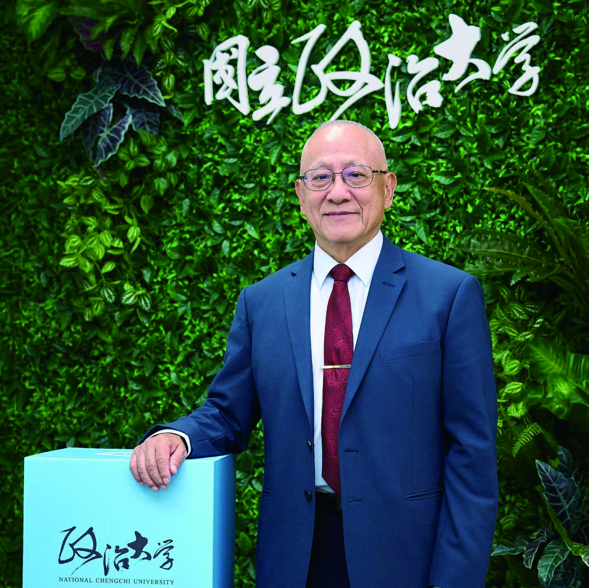

政大企家班NCCU Business Administration · 企業家經營管理研究班
民國70年起，國立政治大學企業管理研究所開辦「企業家管理發展進修班」碩士學分班，以提供企業家培養管理才能之機會，期望提昇企業家進修風氣以求管理紮根，進而促進企業升級。自90年起，更名為「企業家經營管理研究班」。
歷史悠久、凝聚力超強的政大企家班，不僅獨步台灣是政治大學商學院的一塊驚世瑰寶，她更是華人世界累積企業家人才、管理經驗、教學個案最豐厚扎實的第一總裁班。現已成為各大企業高階主管積極爭取進修之管道。
目前計有869人順利結業，企業菁英涵蓋各大產業領袖，皆能以所學運用於企業之營運管理，提升企業之競爭能力，將企業往發展之高峰推進。
2年內修讀完規定課程為原則（自第45期開始），最少選修24學分，每學分上課18小時。每學期至少選修6學分為原則。
以辯證、詰問方式授課，企家班以小班制、精英主義的方式，「精雕細琢」每一位企業領導人或高階主管。
採精英小班制，近40年來每年招生一屆，目前已累計結業超過869位各界菁英。
如需完整課程表，請來信洽詢或致電 02-29393091。

1964年政治大學在美國密西根大學協助下，以當時最先進的管理教育理念為藍圖，成立企業管理研究所，是華人世界第一個授予MBA學位的教育機構，也是華人世界管理教育的重要里程碑。
1981年政大企研所成立企業家班，為企業領導人及高階經理人提供完整且有系統的管理課程以及研究所學分，也是華人世界高階在職管理教育的重大創新。企業家班成立迄今四十五年，依然是台灣企業界在追求管理知能成長時的首選。
四十五年來，曾經在企業家班任教的教師超過兩百位，為學員提供了當時最新最實用的管理知識。近年來，年輕的師資陸續加入，教學內容也隨時代而日新月異。
在學員組成上，早期年齡跨距較接近，自三十屆起，開始有更多的第二代或企業準接班人加入，使代際交流效果更好，上課及課餘活動的氣氛也更活潑。此外，近年入學學員的學歷大幅提高，例如今年45屆新生中超過百分之七十曾獲國內外的碩博士學位，其中不乏已在國內外名校獲得EMBA、MBA學位者。
外人初次接觸企業家班，會感覺到此一團體的氣氛溫韾親切，文化開放，大家都樂於表達意見，即使不同屆的校友，相處也毫無拘束。
大家在外界社交活動中，若聽說對方是企家班校友，一句「你是政大企家班的？第幾屆？」就拉近了彼此的心理距離。
其實溫韾、親切，開放，都還只是表相。從歷屆畢業校友的定期聚會中，會發現更可貴的是長久而真誠的友誼，正如「企家班之歌」裡說的：「三年時光換一生好朋友」。而這些長久的友誼，又可能進而使彼此變成爾後幾十年裡，義務且毫無保留的管理顧問，甚至事業上的伙伴。
這樣的文化與友誼，又起因於在學期間，已經習於知性交流，以及彼此的互相信任。再者，大家知能水準與理念相近，但事業發展歷程與所服務的產業又各異其趣，每位的發言都可能令大家耳目一新，更令大家感到惺惺相惜。
而「知性的交流與互補」、「共同學習」、「深層理念的顯露」，以及「相互信任」的組織文化，又與教學過程中的互動討論、切磋琢磨、深入辯證，以及無保留的分享，密切相關。
近年來，熱心的校友會，從歷屆正副會長到參與秘書處服務工作的校友們，為校友活動的無私奉獻也是功不可沒。校友會定期舉辦球聚、讀書會、健康講座、家長會（家族長幼成員都是企家班校友者已超過六十個家庭）等，也更進一步凝聚了校友與在校同學。
衷心祝福政大企家班，期盼這樣的學風、文化、情誼，以及透過大家的教與學，對企業界乃至社會所做出的貢獻，能夠長長久久，持續發揚光大。